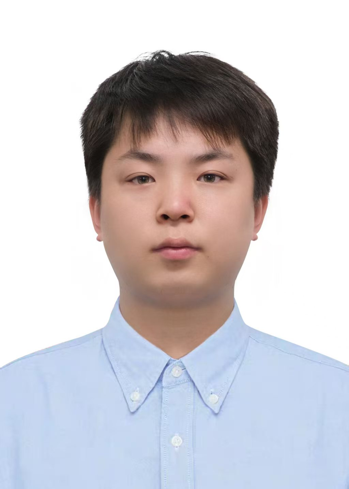

韩小琪
Xiaoqi Han
中国人民大学 · 物理学院 · 博士
Renmin Univ. · Physics · Ph.D. Candidate
📧 hanxiaoqi@ruc.edu.cn
📞 18586147407
韩小琪，中国人民大学物理学院博士研究生。研究方向为人工智能驱动的材料逆向设计，涵盖高温超导体预测、蛋白质-配体对接、材料物相对比学习、声子稳定性基准等。在 npj Computational Materials、Journal of Medicinal Chemistry、Physical Review B、Chinese Physics Letters 等期刊发表和在投论文 13 篇，其中第一/共一作者 9 篇, 总被引 220 余次。开发 PhononBench，分钟级晶体声子谱快速计算平台，累计使用已超 10,000 次。
Xiaoqi Han is a Ph.D. candidate at the School of Physics, Renmin University of China, under Prof. Zhong-Yi Lu. His research focuses on AI-driven inverse design of materials, covering high-temperature superconductor prediction, protein-ligand docking, contrastive learning for phases of matter, and phonon stability benchmarking. He has published 13 papers as first/co-first author in npj Computational Materials, Chemical Science, Physical Review B, Chinese Physics Letters, etc., with over 200 total citations. He developed PhononBench, a minute-level crystal phonon spectrum calculation platform, used over 10,000 times.
论文
Publications
总被引 200+ 次 · 截至 2026 年 5 月
Total citations: 200+ · As of May 2026
XQ Han, PJ Guo, ZF Gao, ZY Lu
C Shen#, X Han#, H Cai#, T Chen, Y Kang, P Pan, X Ji, CY Hsieh, Y Deng, ...
Journal of Medicinal Chemistry 68 (2), 1956-1969 (2025) 8
XQ Han, PJ Guo, ZF Gao, H Sun, ZY Lu
npj Computational Materials 11, 364 (2025) 6
XQ Han, XD Wang, MY Xu, Z Feng, BW Yao, PJ Guo, ZF Gao, ZY Lu
Chinese Physics Letters 42 (2), 027403 (2025) 77
XQ Han, Z Ouyang, PJ Guo, H Sun, ZF Gao, ZY Lu
Chinese Physics Letters 42 (4), 047301 (2025) 25
Z Ouyang#, BW Yao#, XQ Han#, PJ Guo, ZF Gao, ZY Lu
Physical Review B 111 (14), L140501 (2025) 21
BW Yao#, Z Ouyang#, XQ Han#, CJ Wu, PJ Guo, ZF Gao, ZY Lu
Physical Review B (2025) 2
XQ Han, SS Xu, Z Feng, RQ He, ZY Lu
Chinese Physics Letters 40 (2), 027501 (2023) 10
XQ Han, ZF Gao, XD Wang, Z Ouyang, PJ Guo, ZY Lu
Chinese Physics B (2025) 2
XQ Han, ZF Gao, PJ Guo, ZY Lu
ResearchGate / Preprint (2025) 2
H Cai, C Shen, T Jian, X Zhang, T Chen, X Han, Z Yang, W Dang, ...
Chemical Science 15 (4), 1449-1471 (2024) 66
JQ Wang, XQ Han, PJ Guo, RQ He, ZF Gao, ZY Lu
Neural Networks, 108467 (2025) 1
JF Zhang, ZF Gao, XQ Han, B Zhan, D Lv, M Gao, K Liu, X Ren, ZY Lu, ...
arXiv:2603.18876 (2026)